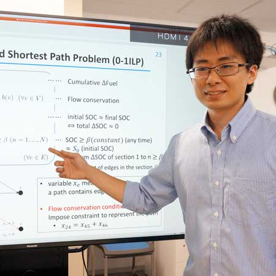

About

経歴
- 2022年 4月 日本電信電話株式会社 NTTソフトウェアイノベーションセンタ
学歴
- 2022年 3月 九州大学大学院数理学府数理学専攻博士後期課程修了
- 2019年 3月 九州大学大学院数理学府数理学専攻博士前期課程修了
- 2017年 4月 九州大学大学院数理学府数理学専攻入学
- 2017年 3月 九州大学理学部数学科卒業
- 2013年 4月 九州大学理学部数学科入学
研究キーワード
- 数理最適化
- 混合整数線形計画問題
- 格子基底簡約
- 並列ソフトウェア